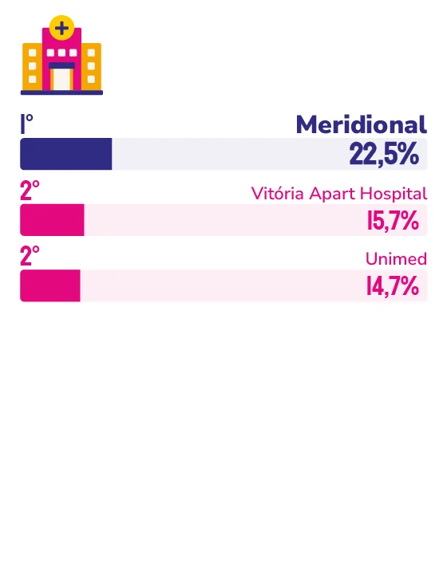

HOSPITAL PARTICULAR
MERIDIONAL
Reconhecido mais uma vez como a marca mais lembrada entre hospitais particulares, Meridional aposta em cirurgia robótica, transplantes e ampliação da alta complexidade para os próximos anos.
Ocupar o primeiro lugar na lembrança espontânea dos capixabas entre hospitais particulares não é resultado de uma única ação, mas soma de uma trajetória construída em torno de segurança, tecnologia e cuidado humanizado. “Conquistar esse resultado de forma consecutiva reforça que estamos no caminho certo ao investir continuamente em qualidade assistencial, inovação, tecnologia e atendimento humanizado”, afirma o diretor-geral do Hub Espírito Santo da Rede Meridional, Gustavo Peixoto Soares Miguel.
Para ele, a lembrança espontânea reflete a presença da rede em diferentes momentos da jornada de saúde das pessoas, da prevenção aos procedimentos de alta complexidade. “Quando o consumidor pensa em saúde, acreditamos que ele associa nossa marca à segurança, excelência e proximidade”, diz.
Esse posicionamento se sustenta em números concretos: são sete hospitais distribuídos estrategicamente pelo Espírito Santo, incluindo a única UTI Neurológica e Hepática do estado; o maior centro transplantador capixaba, e o serviço de cirurgia robótica mais atuante da região. “Essa combinação entre tecnologia, especialização e cuidado integrado fortalece nossa relação de confiança com a população”, resume o diretor.
Alguns marcos recentes reforçam essa posição. A criação do Meridional Saúde, plano de saúde próprio da rede, ampliou a jornada integrada de cuidado, enquanto a realização da primeira cirurgia cardíaca robótica e do primeiro transplante renal robótico do Espírito Santo consolidaram um novo patamar de complexidade assistencial no estado.
A estrutura por trás desses resultados também chama atenção: são 659 leitos ativos, dos quais 518 acreditados, o equivalente a 79% da capacidade instalada, e cinco acreditações hospitalares, que atestam a qualidade dos processos e o compromisso com a segurança do paciente. “É com base nesse cenário que seguimos investindo em tecnologia, inovação, expansão da alta complexidade e qualificação das equipes”, explica Peixoto.
Os próximos anos devem ampliar ainda mais esse patamar: a rede se prepara para conquistar a certificação internacional JCI, uma das mais reconhecidas do mundo em segurança do paciente, além de avaliar a estruturação de um Câncer Center e a implantação do primeiro Centro de Insuficiência Cardíaca Congestiva do Espírito Santo, no Hospital Meridional Cariacica.

Gustavo Peixoto Soares Miguel
Diretor-geral do Hub Espírito Santo da Rede Meridional
“Nos próximos anos, pretendemos continuar evoluindo por meio da inovação, da incorporação de novas tecnologias e da ampliação do acesso à alta complexidade, acompanhando as transformações da medicina e as necessidades da população.”
140
